1. Ce que fait Declas
Declas est une application de bureau qui détecte les animaux et identifie les espèces dans les images et vidéos de pièges photographiques. Elle fonctionne entièrement sur votre ordinateur : une fois un modèle téléchargé, aucune connexion internet n’est nécessaire et aucune image n’est envoyée en ligne.
Une session type se déroule ainsi :
- Vous installez une ou plusieurs extensions de modèles d’IA (un détecteur comme MegaDetector, ou un classificateur d’espèces régional).
- Vous indiquez à Declas un dossier de médias, ou tout un projet avec un dossier par station.
- Declas exécute le modèle et écrit un fichier
detections.jsondans chaque dossier, ainsi que des copies annotées des images. - Vous vérifiez les résultats, corrigez les noms d’espèces et les nombres, dessinez les boîtes oubliées par le modèle et ajoutez vos propres étiquettes.
- Vous construisez le tableau : un CSV avec une ligne par espèce et par image, comprenant la date, l’heure, le GPS, vos étiquettes et, si l’option est activée, la distance jusqu’à chaque animal.
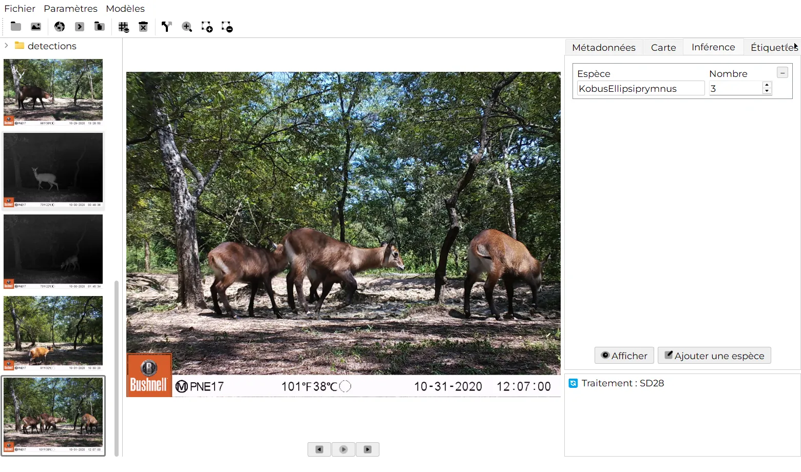
Declas lit les images .jpg, .jpeg et .png et les vidéos .mp4, .avi, .mov et .mkv.
2. Démarrage rapide (5 minutes)
Si vous voulez simplement voir Declas fonctionner sur vos propres images, suivez ces étapes. Chacune renvoie à la section détaillée.
- Installez Declas pour votre système et ouvrez-le. Installation
- Ouvrez Modèles › Extensions, allez dans l’onglet Disponibles et cliquez sur Télécharger pour MegaDetector 6b (50 Mo), ou pour un modèle d’espèces adapté à votre région. Extensions de modèles
- Ouvrez Paramètres › Paramètres d’inférence. Réglez Tâche sur Détection (MegaDetector) ou Classification (modèle d’espèces), choisissez le modèle, cochez Exécuter sur le dossier principal puis cliquez sur Enregistrer. Paramètres d’inférence
- Cliquez sur
 Sélectionner un dossier et choisissez un dossier contenant des images.
Sélectionner un dossier et choisissez un dossier contenant des images. - Cliquez sur
 Exécuter sur le(s) dossier(s). Attendez le message Terminé avec succès dans la barre d’état.
Exécuter sur le(s) dossier(s). Attendez le message Terminé avec succès dans la barre d’état. - Cliquez sur une miniature, puis sur Afficher dans l’onglet Inférence pour voir les boîtes. Vérifier les résultats
- Cliquez sur
 Construire le tableau. Le CSV est enregistré dans le dossier sélectionné. Construire le tableau
Construire le tableau. Le CSV est enregistré dans le dossier sélectionné. Construire le tableau
3. Installation
Declas propose des installateurs pour Windows, macOS et Linux. Utilisez le bouton Télécharger, ou récupérez les fichiers dans la dernière version sur GitHub.
| Système | Fichier | Remarques |
|---|---|---|
| Windows (64 bits) | Declas_1.4.0.exe | Assistant d’installation |
| macOS, Apple Silicon (M1 et plus récents) | Declas-macOS-arm64_1.4.0.dmg | Glisser dans Applications |
| macOS, Intel | Declas-macOS-Intel_1.4.0.dmg | Glisser dans Applications |
| Linux (x86-64) | Declas-Linux_1.4.0.tar.gz | Extraire et lancer |
Tout ordinateur 64 bits récent peut faire tourner Declas. Les modèles les plus lourds (par exemple DeepFaune Classification, 1,2 Go) demandent plus de mémoire. Une carte graphique NVIDIA (CUDA) accélère nettement le traitement, mais n’est pas obligatoire.
Windows
- Téléchargez
Declas_<version>.exe. - Double-cliquez dessus et suivez l’assistant d’installation.
- Lancez Declas depuis le menu Démarrer ou le raccourci du bureau.
L’installateur n’est pas signé numériquement : Windows SmartScreen peut afficher « Windows a protégé votre ordinateur ». Cliquez sur Informations complémentaires, puis sur Exécuter quand même. Cette étape n’est nécessaire qu’une fois.
macOS
- Téléchargez le
.dmgcorrespondant à votre Mac : arm64 pour Apple Silicon (M1, M2, M3, M4…) ou Intel pour les Mac plus anciens. Vous hésitez ? Ouvrez › À propos de ce Mac : « Puce : Apple M… » signifie Apple Silicon. - Ouvrez le
.dmget faites glisser Declas dans le dossier Applications. - Lancez Declas depuis Applications.
L’application n’est pas notariée : Gatekeeper peut bloquer le premier lancement. Faites un clic droit (ou Contrôle-clic) sur l’application, choisissez Ouvrir, puis confirmez.
Si macOS indique que l’application est « endommagée », ouvrez le Terminal et exécutez :
xattr -cr /Applications/Declas.appLinux
- Téléchargez
Declas-Linux_<version>.tar.gz. - Extrayez l’archive et lancez le programme :
tar -xzf Declas-Linux_1.4.0.tar.gz cd Declas chmod +x Declas ./Declas
Si une erreur signale une bibliothèque manquante comme libGL.so.1, installez-la avec votre gestionnaire de paquets, par exemple sudo apt-get install libgl1 sous Debian ou Ubuntu.
Premier lancement
À la première ouverture, la fenêtre est vide et aucun modèle n’est encore installé. C’est normal : rendez-vous dans Extensions de modèles pour en télécharger un.
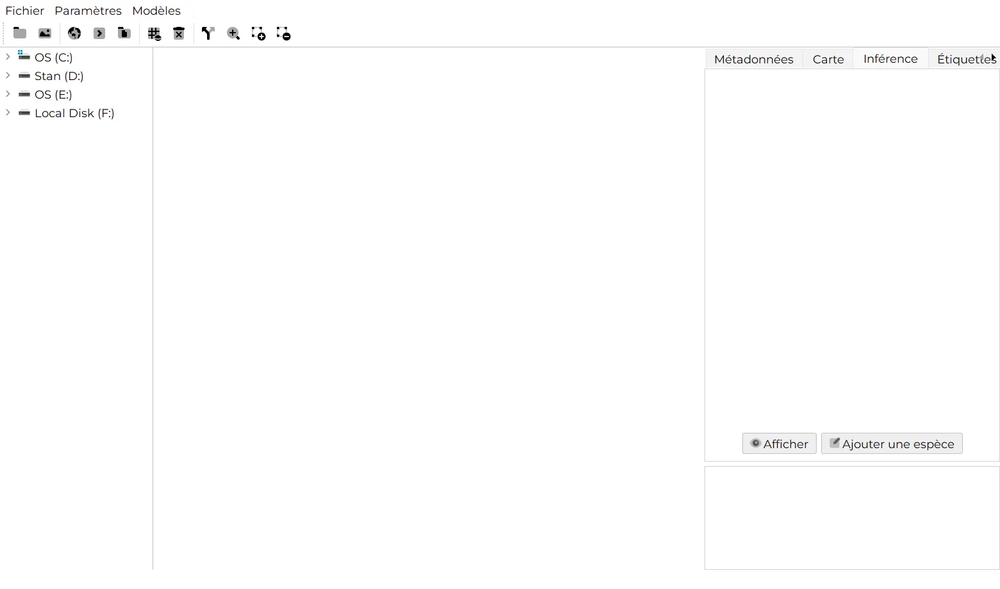
4. Découvrir l’interface

- Barre de menus : Fichier, Paramètres et Modèles.
- Barre d’outils : chaque action en un clic (voir le tableau ci-dessous).
- Arborescence des dossiers (en haut à gauche) : les sous-dossiers du dossier sélectionné. Cliquez sur un dossier pour afficher ses médias.
- Miniatures (à gauche) : toutes les images et vidéos du dossier courant, par ordre de nom. Le fichier ouvert est mis en évidence. Cliquez sur une miniature pour l’ouvrir.
- Visionneuse (au centre) : l’image ou la vidéo, avec les boutons Précédent, Lecture/Pause et Suivant en dessous. Pour les vidéos, une barre de lecture et des boutons de saut ◀◀ / ▶▶ apparaissent.
- Panneau latéral (à droite), avec quatre onglets : Métadonnées, Carte, Inférence et Étiquettes personnalisées.
- Journal (en bas à droite) : les messages des traitements par lot, dossier par dossier.
- Barre d’état (en bas) : de courts messages comme Exécution…, Terminé ✅ ou Terminé avec succès, avec un indicateur animé pendant le traitement.
Boutons de la barre d’outils
| Bouton | Nom | Action |
|---|---|---|
| Sélectionner un dossier | Choisir le dossier (ou le projet) à traiter. | |
| Sélectionner un média | Ouvrir une seule image ou vidéo. Son dossier s’affiche dans la barre latérale. | |
| Afficher sur la carte | Placer l’image courante sur la carte, si elle contient des coordonnées GPS. | |
| Exécuter sur le média affiché | Lancer le modèle choisi sur l’image ou la vidéo affichée. | |
| Exécuter sur le(s) dossier(s) | Lancer le modèle sur tout le dossier ou projet sélectionné. | |
| Construire le tableau | Réunir tous les résultats et étiquettes dans un fichier CSV. | |
| Effacer tous les rapports | Supprimer tous les fichiers detections.json et .csv du dossier courant, après confirmation. | |
| Séparer les médias avec / sans cible | Copier les images dans les dossiers has_target et no_target. | |
| Loupe | Activer une loupe qui suit la souris sur l’image. | |
| Dessiner une boîte englobante | Faire glisser sur l’image pour encadrer un animal manqué. | |
| Supprimer une boîte englobante | Survoler une boîte puis cliquer pour la supprimer. |
Menus
| Menu | Élément | Rôle |
|---|---|---|
| Fichier | Importer | Charger un detections.json existant pour construire un tableau à partir de celui-ci. En savoir plus |
| Fichier | Quitter | Fermer Declas. |
| Paramètres | Apparence | Thème Clair, Sombre ou Système. |
| Paramètres | Paramètres d’inférence | Tâche, modèle, seuils, options vidéo et distance. En savoir plus |
| Paramètres | Étiquettes | Définir vos propres champs de données. En savoir plus |
| Paramètres | Général | Son de notification, langue et thème. En savoir plus |
| Modèles | Extensions | Parcourir, télécharger et supprimer des modèles d’IA. En savoir plus |
| Modèles | Publier | Comment publier votre propre modèle pour Declas. En savoir plus |
5. Organiser vos données
Declas accepte deux organisations de dossiers. Le choix se fait avec l’option Exécuter sur le dossier principal dans les paramètres d’inférence. Elle détermine la façon dont les dossiers sont traités et dont le tableau final est rempli.
Mode A : un dossier de médias (« Exécuter sur le dossier principal » coché)
Utilisez ce mode quand vos images ne sont pas encore triées, ce qui est le cas habituel en sortie de carte SD. Declas ne traite que les médias situés directement dans le dossier sélectionné.
Survey_2024/
└── SD30/ ← sélectionnez ce dossier
├── 10220130.JPG
├── 10260398.JPG
├── 10280600.JPG
└── …
Traitez chaque station en sélectionnant son dossier l’un après l’autre. La colonne species du tableau provient du modèle.
Mode B : projet › station › espèce (« Exécuter sur le dossier principal » décoché)
Utilisez ce mode quand vos images sont déjà triées en dossiers d’espèces à l’intérieur de chaque station, par exemple après un premier tri manuel. Sélectionnez le dossier du projet : Declas parcourt chaque station et traite, en parallèle, tous les sous-dossiers contenant des médias.

Dans ce mode, la colonne station du tableau reprend le nom du dossier de station et la colonne species le nom du dossier d’espèce. Le modèle sert à compter les individus et à localiser leurs boîtes.
Si vous sélectionnez un dossier contenant directement des images alors que l’option est décochée, Declas affiche « Aucun sous-dossier valide trouvé ». Cochez Exécuter sur le dossier principal, ou sélectionnez le dossier parent qui contient les dossiers des stations.
Les dossiers nommés detections et frames sont créés par Declas et sont toujours ignorés.
6. Extensions de modèles
Declas n’est pas livré avec un modèle figé. Les modèles s’installent sous forme d’extensions : de petits paquets contenant un fichier de description et le code pour les exécuter. Leurs poids sont téléchargés une seule fois et conservés sur votre ordinateur.
Installer un modèle
- Ouvrez Modèles › Extensions. La fenêtre reste ouverte pendant que vous continuez à travailler dans Declas.
- Ouvrez l’onglet Disponibles. Chaque fiche indique la région du modèle, sa taille, son framework, son auteur, sa licence, sa citation et les classes qu’il reconnaît.
- Utilisez le champ de recherche pour filtrer par nom, région, auteur, tâche ou espèce, par exemple leopard ou Europe.
- Cliquez sur Télécharger. Une barre de progression suit le téléchargement ; le bouton devient Installé ✓ une fois terminé.
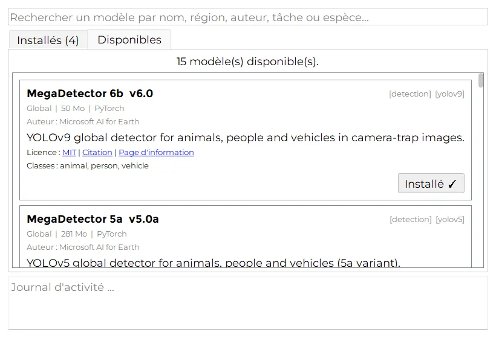
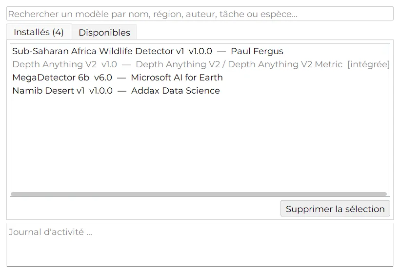
Quel modèle choisir ? S’il existe un modèle d’espèces pour votre région, utilisez-le avec Tâche : Classification : il repère et nomme les animaux en une seule passe. Sinon, utilisez MegaDetector 6b avec Tâche : Détection pour séparer animaux, personnes et véhicules des images vides, puis triez les espèces vous-même.
Modèles disponibles
Cette liste est lue en direct depuis le registre utilisé par Declas : elle correspond toujours à ce que vous voyez dans Modèles › Extensions.
| Modèle | Tâche | Région | Classes | Taille | Licence |
|---|---|---|---|---|---|
| MegaDetector 6b | Détection | Mondial | animal, person, vehicle | 50 Mo | MIT |
| MegaDetector 5a | Détection | Mondial | animal, person, vehicle | 281 Mo | MIT |
| MegaDetector 5b | Détection | Mondial | animal, person, vehicle | 281 Mo | MIT |
| DeepFaune Detection v1.1 | Détection | Europe | animal, person, vehicle | 22 Mo | CC BY-NC-SA 4.0 |
| Sub-Saharan Africa Wildlife Detector v1 | Classification | Afrique subsaharienne | 36 | 101 Mo | CC BY-NC 4.0 |
| DeepFaune Classification v1.1 | Classification | Europe | 26 | 1 220 Mo | CC BY-NC-SA 4.0 |
| Namib Desert v1 | Classification | Namibie | 30 | 107 Mo | CC BY-NC-SA 4.0 |
| AI4G Snapshot Serengeti | Classification | Serengeti (Tanzanie) | 10 | 89 Mo | MIT |
| AI4G Amazon Classification | Classification | Amazonie | 36 | 192 Mo | MIT |
| Colombian Amazon (pywildlife) | Classification | Colombie (Amazonie) | 36 | 197 Mo | MIT |
| Peruvian Amazon v1 | Classification | Pérou (Amazonie) | 42 | 247 Mo | MIT |
| Southwest USA v3 | Classification | Sud-ouest des États-Unis | 27 | 431 Mo | MIT |
| New Zealand Invasives v1 | Classification | Nouvelle-Zélande | 17 | 32 Mo | CC BY-NC-SA 4.0 |
| Iran Wildlife v1 | Classification | Iran | 13 | 32 Mo | CC BY-NC-SA 4.0 |
| Depth Anything V2 (Metric Outdoor) | Profondeur | Mondial | distance en mètres | 97 Mo | Apache-2.0 |
Les modèles sont créés par leurs auteurs, cités sur chaque fiche. Plusieurs sont sous licence usage non commercial uniquement (CC BY-NC) : vérifiez la licence avant toute utilisation commerciale des résultats, et citez le modèle dans vos publications grâce au lien Citation.
7. Paramètres d’inférence
Ouvrez Paramètres › Paramètres d’inférence pour choisir ce que Declas exécute et comment. Cliquez sur Enregistrer pour conserver vos réglages ; ils sont retrouvés à la prochaine ouverture de Declas.
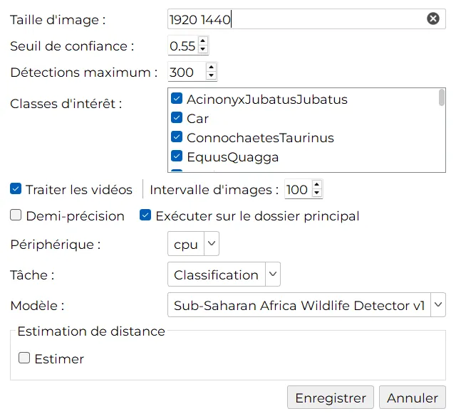
| Réglage | Signification | Conseil |
|---|---|---|
| Tâche | Détection repère les animaux, les personnes et les véhicules. Classification nomme aussi les espèces. | Doit correspondre au type de modèle choisi. |
| Modèle | L’extension installée à utiliser. Seuls les modèles dont les poids sont téléchargés apparaissent. | Si la liste indique Aucun modèle installé, voir Extensions de modèles. |
| Taille d’image | Deux nombres, largeur et hauteur, par exemple 1920 1440. | Gardez la valeur par défaut sauf indication contraire de l’auteur du modèle. |
| Seuil de confiance | Les détections dont le score est inférieur à cette valeur sont ignorées (de 0 à 1). | 0,55 est un bon point de départ. Baissez-le (0,3 à 0,4) si des animaux sont manqués ; augmentez-le en cas de fausses détections. |
| Détections maximum | Le nombre maximal d’objets conservés par image. | 300 suffit largement pour la faune. |
| Classes d’intérêt | Cochez les classes ou espèces à conserver. Celles qui sont décochées sont retirées des résultats. | Décochez person et vehicle pour ne garder que les animaux. |
| Traiter les vidéos | Si coché, les vidéos sont analysées en même temps que les images. | Décochez pour ignorer les vidéos et gagner du temps. |
| Intervalle d’images | Pour les vidéos, analyse une image toutes les n images. | À 30 images par seconde, un intervalle de 30 correspond à une image par seconde. Plus petit, c’est plus complet mais plus lent. |
| Demi-précision | Exécute le modèle en précision 16 bits. | Utile uniquement avec une carte graphique CUDA. Laissez décoché sur processeur. |
| Exécuter sur le dossier principal | Coché : traite uniquement le dossier sélectionné. Décoché : organisation projet › station › espèce. | Voir Organiser vos données. |
| Périphérique | cpu, ou cuda lorsqu’une carte NVIDIA est détectée. | Choisissez cuda s’il apparaît. |
| Estimation de distance | Cochez Estimer pour calculer la distance jusqu’à chaque animal après la détection. | Voir Estimation de distance. |
8. Exécuter sur une seule image ou vidéo
Pratique pour essayer un modèle ou un seuil avant de traiter tout un inventaire.
- Ouvrez un fichier avec
 Sélectionner un média, ou cliquez sur une miniature après avoir sélectionné un dossier.
Sélectionner un média, ou cliquez sur une miniature après avoir sélectionné un dossier. - Cliquez sur
 Exécuter sur le média affiché. La barre d’état affiche Exécution…, puis Terminé ✅.
Exécuter sur le média affiché. La barre d’état affiche Exécution…, puis Terminé ✅. - Le résultat apparaît dans l’onglet Inférence. Cliquez sur Afficher pour voir les boîtes.
Le résultat est enregistré dans le detections.json de ce dossier : vous pourrez construire un tableau à partir de celui-ci plus tard.
9. Exécuter sur des dossiers (traitement par lot)
- Vérifiez vos réglages dans Paramètres › Paramètres d’inférence, en particulier Exécuter sur le dossier principal.
- Cliquez sur Sélectionner un dossier et choisissez un dossier de station (mode A) ou un dossier de projet (mode B).
- Cliquez sur Exécuter sur le(s) dossier(s).
Le traitement se déroule en arrière-plan : vous pouvez continuer à naviguer. Le journal affiche chaque dossier au début (🔄 Traitement : SD30, ou 🔄 Station : … en mode projet) et à la fin du traitement, et la barre d’état indique Terminé avec succès quand tout est fini. Un son de notification retentit si vous l’avez activé dans les paramètres généraux.
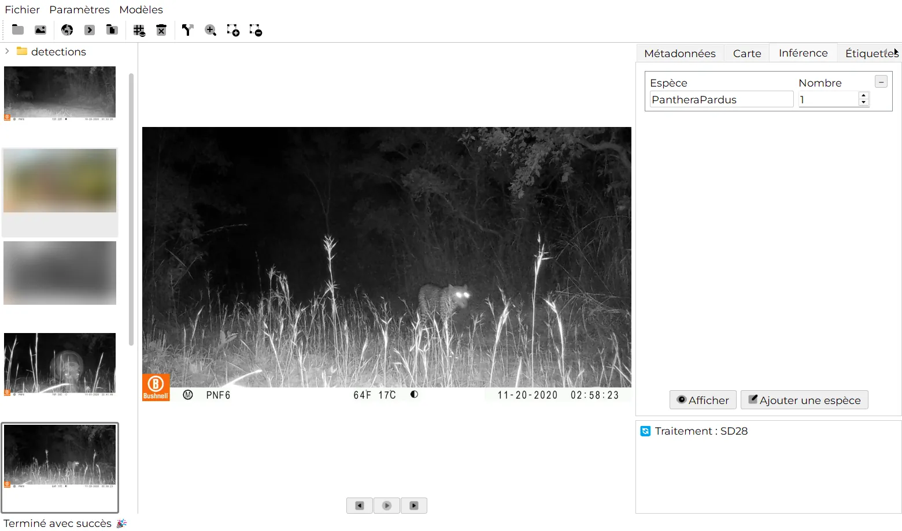
Relancer un dossier remplace son detections.json. Si vous avez corrigé des résultats à la main, sauvegardez ce fichier avant de relancer.
10. Vérifier les résultats
L’onglet Inférence
Cliquez sur une miniature et ouvrez l’onglet Inférence. Declas affiche une fiche par espèce trouvée sur l’image, avec le nom de l’espèce et le nombre d’individus.
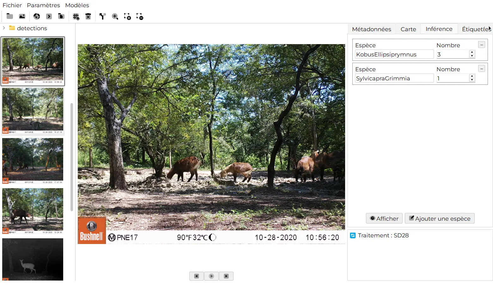
Les images où rien n’a été trouvé sont enregistrées avec l’espèce Empty et un nombre de 0, pour qu’elles figurent quand même dans votre tableau.
Voir les boîtes
Cliquez sur Afficher pour voir la copie annotée de l’image, avec une boîte et un score de confiance pour chaque détection. Ces copies sont enregistrées dans le sous-dossier detections : vos images originales ne sont jamais modifiées.


Utilisez la  Loupe pour agrandir les animaux petits ou éloignés : activez-la, puis survolez l’image.
Loupe pour agrandir les animaux petits ou éloignés : activez-la, puis survolez l’image.
Corriger les espèces et les nombres
- Saisissez un nouveau nom dans le champ Espèce, ou modifiez le Nombre.
- Cliquez sur Ajouter une espèce pour ajouter une fiche pour une espèce que le modèle n’a pas signalée.
- Cliquez sur le bouton – d’une fiche pour supprimer cette entrée.
Les modifications sont enregistrées automatiquement dans detections.json au fil de la saisie. Elles seront prises en compte à la prochaine construction du tableau.
11. Dessiner et supprimer des boîtes englobantes
Quand le modèle manque un animal, ou encadre quelque chose qui n’en est pas un, corrigez-le directement sur l’image.
Ajouter un animal manqué
- Cliquez sur
 Dessiner une boîte englobante.
Dessiner une boîte englobante. - Tracez un rectangle autour de l’animal.
- Choisissez ou saisissez l’espèce dans la boîte de dialogue Nouvelle boîte englobante. Les espèces déjà présentes sur l’image sont proposées en premier, suivies des classes du modèle.
Supprimer une boîte erronée
- Cliquez sur
 Supprimer une boîte englobante.
Supprimer une boîte englobante. - Survolez la boîte (elle se met en évidence) puis cliquez dessus.

Chaque boîte ajoutée ou supprimée met à jour le nombre d’individus et est enregistrée dans detections.json : elle est donc prise en compte dans le rapport. Les fichiers créés par de très anciennes versions de Declas ne peuvent pas être modifiés ainsi.
12. Étiquettes personnalisées
Les étiquettes permettent de noter vos propres observations pour chaque image ou vidéo : sexe, classe d’âge, comportement, distance mesurée à la main… Elles deviennent des colonnes du tableau final.
Définir vos étiquettes
- Ouvrez Paramètres › Étiquettes.
- Cliquez sur Ajouter une étiquette, puis renseignez le Titre de l’étiquette, choisissez le Type de données (float, integer, text, date ou boolean) et, si besoin, listez des Valeurs prédéfinies (séparées par des virgules).
- Cliquez sur Enregistrer.
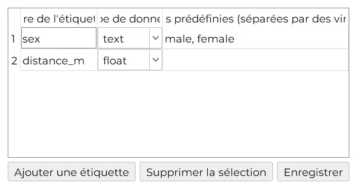
sex (male, female) et distance_m.Renseigner les étiquettes
Ouvrez une image et allez dans l’onglet Étiquettes personnalisées. Chaque étiquette a son champ ; celles qui ont des valeurs prédéfinies affichent une liste déroulante. Cliquez sur Ajouter une entrée pour décrire plusieurs individus sur la même image (Entrée 1, Entrée 2…). Les valeurs sont enregistrées automatiquement.
Dans le tableau, une étiquette texte avec des valeurs prédéfinies devient une colonne 0/1 par valeur (par exemple sex_male, sex_female), ce qui facilite l’analyse. Les autres étiquettes gardent une seule colonne avec la valeur saisie. Chaque entrée supplémentaire ajoute une ligne.
Une étiquette nommée distance_m est traitée à part lorsque l’estimation automatique de distance est activée : les valeurs saisies à la main sont ajoutées comme lignes supplémentaires pour les individus non détectés par le modèle, au lieu de remplacer les distances estimées.
13. Métadonnées et carte
L’onglet Métadonnées liste tout ce que contient le fichier image : position GPS, marque de l’appareil, micrologiciel, date et heure de la prise de vue, exposition, etc.
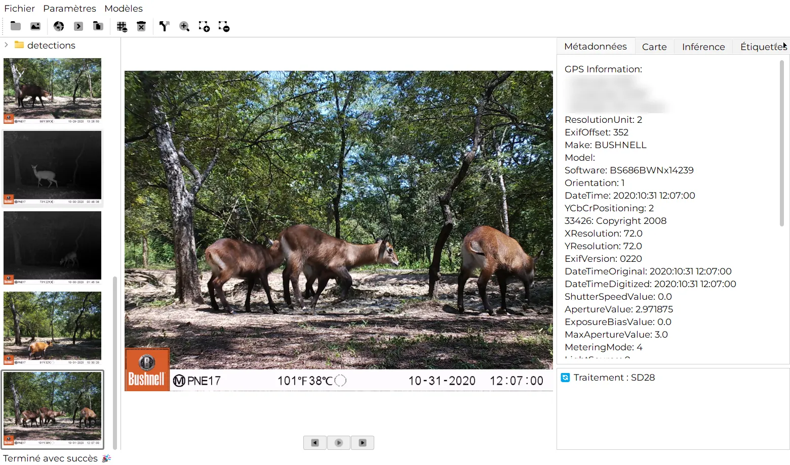
Si l’image contient des coordonnées GPS, cliquez sur  Afficher sur la carte pour la placer sur une carte interactive dans l’onglet Carte. En l’absence de données GPS, Declas vous l’indique.
Afficher sur la carte pour la placer sur une carte interactive dans l’onglet Carte. En l’absence de données GPS, Declas vous l’indique.
La date, l’heure et le GPS sont aussi repris dans le tableau. La colonne time_radian donne l’heure de la journée sous forme d’angle entre 0 et 2π, prête pour l’analyse des rythmes d’activité.
Avant de partager publiquement des résultats ou des captures d’écran, pensez à retirer ou arrondir les coordonnées des espèces sensibles. Des localisations exactes peuvent aider les braconniers.
14. Travailler avec des vidéos
- Cliquez sur la miniature d’une vidéo pour la lire dans la visionneuse. Utilisez la barre de lecture, ◀◀ / ▶▶ et Lecture/Pause.
- Quand Traiter les vidéos est coché, Declas extrait une image toutes les Intervalle d’images images dans un sous-dossier
frames(nommées<vidéo>_f000120.jpg, etc.), exécute le modèle sur chacune et fusionne les résultats dans ledetections.jsondu dossier. - Chaque image extraite reçoit sa propre date et heure, calculées à partir de l’heure de début de la vidéo et de la position de l’image. Le GPS est repris du fichier vidéo lorsqu’il en contient.
- Dans le tableau, les lignes issues de vidéos ont
media_typeégal à video.
Les étiquettes saisies pour une vidéo s’appliquent à ses images lors de la construction du tableau.
15. Estimation de distance
Declas peut estimer la distance entre la caméra et chaque animal détecté, ce qui est utile pour l’échantillonnage par distance avec pièges photographiques et l’estimation de densité. Il utilise Depth Anything V2 (Metric Outdoor), un modèle qui prédit une profondeur en mètres pour chaque pixel (jusqu’à 80 m).
Configuration
- Ouvrez Paramètres › Paramètres d’inférence et cochez Estimer sous Estimation de distance.
- Choisissez le Modèle de profondeur. Ses poids (environ 97 Mo) se téléchargent automatiquement la première fois, ce qui demande une connexion internet une seule fois.
- Cliquez sur Définir le champ de vision et saisissez le champ de vision horizontal de chaque caméra, en degrés (voir ci-dessous).
- Cliquez sur Enregistrer, puis lancez la détection comme d’habitude.
L’estimation de distance démarre automatiquement après la détection. Si un dossier possède déjà un detections.json, Declas saute la détection et passe directement à l’estimation de distance, ce qui fait gagner beaucoup de temps.
Champ de vision par station
Le champ de vision corrige la distance des animaux situés sur les côtés de l’image, qui sont plus loin que ne l’indique leur seule profondeur. Vous le trouverez dans le manuel de votre caméra (souvent entre 40° et 60° pour les pièges photographiques).
- Utilisez Ajouter et Supprimer pour modifier le tableau, une ligne par station.
- Ou cliquez sur Importer un CSV avec une ligne par station. Les colonnes
stationetfovsont utilisées ; si elles portent d’autres noms, la première colonne est la station et la seconde le champ de vision.
station,fov
SD25,52
SD28,52
SD30,48Le nom de la station doit correspondre au nom du dossier : le dossier sélectionné en mode A, ou le dossier de station en mode B (sans tenir compte des majuscules). Si vous ne définissez qu’un seul champ de vision, il s’applique à toutes les stations. Si aucun ne correspond, Declas utilise la profondeur brute et affiche un avertissement dans la barre d’état.
Comment la distance est calculée
Pour chaque boîte, Declas lit la profondeur au milieu du bord inférieur de la boîte, là où l’animal touche le sol. Avec un champ de vision, il convertit la position horizontale de ce point en angle par rapport à l’axe de la caméra et divise la profondeur par son cosinus :
pos = (x − largeur/2) / (largeur/2) # −1 bord gauche … +1 bord droit
angle = atan(pos × tan(FOV / 2))
distance = profondeur / cos(angle)Le résultat est enregistré pour chaque individu sous distance_m. Dans le tableau, une image avec des distances donne une ligne par individu (nombre = 1), chacune avec sa propre distance.
La profondeur monoculaire reste une estimation. Calibrez-la pour votre site, par exemple en photographiant une personne ou un repère à des distances connues devant chaque caméra, avant de l’utiliser pour estimer des densités.
16. Séparer les images vides
Les pièges photographiques produisent beaucoup d’images vides (vent, herbes, soleil). Après avoir exécuté un modèle, cliquez sur  Séparer les médias avec / sans cible. Dans chaque dossier traité, Declas crée :
Séparer les médias avec / sans cible. Dans chaque dossier traité, Declas crée :
has_target/: les copies des images avec au moins une détection,no_target/: les copies des images où rien n’a été trouvé.
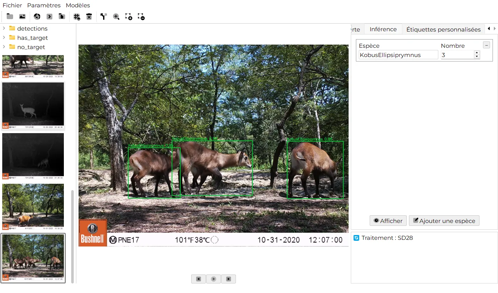
has_target et no_target apparaissent à côté de detections.Les images sont copiées, pas déplacées : les originaux restent à leur place. Cela double l’espace disque occupé par ces images.
17. Construire le tableau (export CSV)
- Sélectionnez le dossier (mode A) ou le projet (mode B) traité.
- Cliquez sur Construire le tableau.
- Un message indique où le fichier a été enregistré :
<tâche>_AAAAMMJJ_HHMMSS.csv(par exempleclassification_20261011_211359.csv) dans le dossier sélectionné. Les tableaux précédents ne sont jamais écrasés.
Voici les premières lignes d’un vrai tableau construit à partir de la station SD30 (chemins raccourcis, coordonnées masquées) :
| media | media_type | species | count | latitude | longitude | altitude | make | date | time | time_radian | distance_m | sex_male | sex_female |
|---|---|---|---|---|---|---|---|---|---|---|---|---|---|
| 10220130 | image | SylvicapraGrimmia | 1 | ••• | ••• | 184.0 | BUSHNEL | 2020:10:22 | 07:27:17 | 1.952 | |||
| 10260398 | image | HippopotamusAmphibious | 1 | ••• | ••• | 0.0 | BUSHNEL | 2020:10:26 | 02:37:32 | 0.687 | |||
| 10270578 | image | Empty | 0 | ••• | ••• | 209.0 | BUSHNEL | 2020:10:27 | 12:45:15 | 3.339 | |||
| 10280600 | image | KobusEllipsiprymnus | 3 | ••• | ••• | 205.0 | BUSHNEL | 2020:10:28 | 10:56:20 | 2.864 |
Description des colonnes
Les noms de colonnes restent en anglais, quelle que soit la langue de l’interface, pour que vos scripts d’analyse fonctionnent partout.
| Colonne | Contenu |
|---|---|
media_path | Chemin complet de l’image (ou de l’image extraite d’une vidéo). |
media | Nom du fichier sans extension. |
media_type | image ou video. |
category | Classe renvoyée par le modèle (ou Empty). |
species | Nom de l’espèce. En mode projet (B), le nom du dossier d’espèce. |
station | Mode projet (B) uniquement : le nom du dossier de station. |
count | Nombre d’individus de cette espèce sur l’image (1 par ligne lorsque des distances sont présentes). |
latitude, longitude, altitude | Position GPS du fichier, si disponible. |
make, model | Marque et modèle de l’appareil, d’après le fichier. |
date, time | Date et heure de la prise de vue (AAAA:MM:JJ, HH:MM:SS). |
time_radian | Heure de la journée sous forme d’angle de 0 à 2π (00:00 = 0, 12:00 = π). |
distance_m | Distance estimée jusqu’à l’animal, en mètres (vide si elle n’a pas été calculée). |
| vos étiquettes | Une colonne par étiquette, ou une colonne 0/1 par valeur prédéfinie (sex_male, sex_female…). |
Le CSV s’ouvre directement dans Excel, LibreOffice, R (read.csv()) ou Python (pandas.read_csv()).
18. Fichiers créés par Declas
Declas ne modifie jamais vos médias originaux. Tout ce qu’il produit se trouve à côté :
SD30/ ├── 10280600.JPG ← votre image originale, intacte ├── detections.json ← résultats de tous les fichiers du dossier ├── detections/ │ ├── 10280600.JPG ← copie annotée avec les boîtes │ └── custom_tags.json ← vos valeurs d’étiquettes ├── frames/ ← images extraites des vidéos (si le dossier en contient) │ └── detections/ ├── has_target/ · no_target/ ← uniquement après une séparation └── classification_20261011_211359.csv ← uniquement après Construire le tableau
Le format de detections.json
Chaque entrée a pour clé <nom du fichier>_<espèce> et conserve les boîtes individuelles, ce qui permet de réutiliser les résultats dans d’autres outils :
"10280600_KobusEllipsiprymnus": {
"media": "10280600",
"media_type": "image",
"species": "KobusEllipsiprymnus",
"count": 3,
"date": "2020:10:28",
"time": "10:56:20",
"time_radian": 2.864,
"detections": [
{ "species": "KobusEllipsiprymnus", "confidence": 0.76,
"bbox": [632.9, 804.7, 888.4, 997.3] },
…
]
}bbox vaut [x1, y1, x2, y2] en pixels, depuis le coin supérieur gauche de l’image.
Repartir de zéro
 Effacer tous les rapports de détection/classification supprime tous les fichiers
Effacer tous les rapports de détection/classification supprime tous les fichiers detections.json et tous les fichiers .csv du dossier courant, après confirmation. Cette action est irréversible : déplacez d’abord hors du dossier tout CSV que vous voulez garder (y compris vos propres fichiers).
19. Importer un résultat existant
Utilisez Fichier › Importer pour sélectionner un fichier detections.json, par exemple produit sur un autre ordinateur. Declas confirme Fichier importé ✅ ; cliquez ensuite sur  Construire le tableau pour créer le CSV à côté de ce fichier.
Construire le tableau pour créer le CSV à côté de ce fichier.
20. Réglages
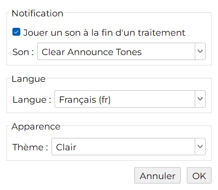
- Notification : cochez Jouer un son à la fin d’un traitement et choisissez un son pour être prévenu à la fin d’un long traitement. Sélectionner un son en joue un aperçu.
- Langue : English ou Français. La nouvelle langue s’applique au prochain démarrage de Declas.
- Thème : Clair, Sombre ou Système (suit votre système d’exploitation). Également disponible dans Paramètres › Apparence.

21. Publier votre propre modèle
Tout le monde peut ajouter un modèle de détection ou de classification à Declas. Modèles › Publier affiche ces consignes dans l’application.
1. Créer le dossier de l’extension
model_extensions/
└── my_model_v1/
├── manifest.json ← métadonnées (obligatoire)
├── adapter.py ← code d’inférence (obligatoire)
└── README.md ← facultatif mais apprécié
2. Le décrire dans manifest.json
{
"name": "my_model_v1",
"display_name": "My Model v1",
"version": "1.0",
"author": "Votre nom ou organisation",
"description": "Une phrase décrivant ce que fait le modèle.",
"license": "CC-BY-4.0",
"license_url": "https://…",
"citation_url": "https://doi.org/…",
"info_url": "https://github.com/…",
"region": "West Africa",
"task": "classification",
"framework": "ultralytics",
"model_arch": "yolov8",
"environment": "PyTorch",
"input_type": "detect",
"model_file": "my_model.pt",
"download_url": "https://zenodo.org/records/…/files/my_model.pt?download=1",
"size_mb": 50,
"zip_url": "",
"adapter": "adapter.py",
"classes": ["species_a", "species_b"]
}3. Écrire adapter.py
from model_extensions.base import ModelAdapter
class MyModelAdapter(ModelAdapter):
def load(self, model_path: str, device: str) -> None:
# Appelée une fois. model_path est le fichier de poids téléchargé.
...
def predict_single(self, image_path: str, conf_thres: float) -> list:
# Un dictionnaire par détection :
# species (str), confidence (0–1), bbox [x1, y1, x2, y2] en pixels, ou []
return [{"species": "lion", "confidence": 0.92, "bbox": [10, 20, 300, 400]}]4. Héberger les poids et soumettre
- Hébergez les poids sur Zenodo (gratuit, avec un DOI), le Hugging Face Hub ou les GitHub Releases (fichiers de moins de 2 Go).
download_urldoit être un lien de téléchargement direct. - Faites un fork du dépôt Declas, ajoutez votre dossier dans
model_extensions/et une entrée dansmodel_extensions/registry.json. - Ouvrez une pull request avec une courte description. Les mainteneurs relisent le code, testent le téléchargement puis l’intègrent : votre modèle apparaît alors dans l’onglet Disponibles de chaque utilisateur. Aucune nouvelle version de Declas n’est nécessaire : lors de l’installation, Declas (1.4.1 ou plus récent) télécharge votre
adapter.pyavec les poids. - Votre adaptateur ne peut importer que des paquets déjà inclus dans Declas (PyTorch, torchvision, Ultralytics, PytorchWildlife, timm, Transformers, ONNX Runtime, OpenCV, Pillow, NumPy). S’il en nécessite un autre, signalez-le dans la pull request.
22. Dépannage et FAQ
Declas affiche « Aucun modèle installé. Ajoutez-en un ! »
Installez un modèle dans Modèles › Extensions › Disponibles, puis sélectionnez-le dans Paramètres › Paramètres d’inférence et cliquez sur Enregistrer.
« Les poids de l’extension « … » ne sont pas téléchargés. »
Le modèle est listé mais son fichier de poids manque, généralement parce qu’un téléchargement a été interrompu. Supprimez-le dans l’onglet Installés puis téléchargez-le à nouveau.
« Aucun sous-dossier valide trouvé » lors du traitement d’un dossier
Vous êtes en mode projet (Exécuter sur le dossier principal décoché) mais avez sélectionné un dossier qui contient des images. Cochez Exécuter sur le dossier principal, ou sélectionnez le dossier parent qui contient les dossiers des stations. Voir Organiser vos données.
Les vidéos sont ignorées
Cochez Traiter les vidéos dans les paramètres d’inférence. Quand l’option est désactivée, la barre d’état indique « Le traitement des vidéos est désactivé ».
Trop d’animaux manqués, ou trop de fausses détections
Ajustez le Seuil de confiance : baissez-le pour détecter plus d’animaux, augmentez-le pour réduire les faux positifs. Vous pouvez aussi corriger des images une à une avec les outils de boîtes.
Le traitement est lent
Utilisez une carte graphique CUDA si vous en avez une (Périphérique : cuda), augmentez l’Intervalle d’images pour les vidéos, décochez Traiter les vidéos si vous n’en avez pas besoin, ou choisissez un modèle plus léger (MegaDetector 6b pèse 50 Mo contre 281 Mo pour la 5a).
Le bouton « Afficher » n’affiche rien
Lancez d’abord la détection ou la classification sur cette image. Afficher montre la copie annotée du dossier detections.
« Aucune information GPS trouvée » avec Afficher sur la carte
L’image ne contient pas de coordonnées GPS. Beaucoup de pièges photographiques ne les enregistrent pas ; vous pourrez joindre les coordonnées des stations au CSV lors de l’analyse.
Declas a-t-il besoin d’internet ?
Seulement pour télécharger les modèles (et le modèle de profondeur la première fois que l’estimation de distance est utilisée). Le traitement lui-même se fait entièrement hors ligne.
Où trouver plus d’aide ?
Cherchez ou ouvrez un ticket sur GitHub, ou utilisez le formulaire de contact. Indiquer votre version de Declas, votre système d’exploitation et le fichier journal aide beaucoup. Sous Windows, le journal se trouve dans %TEMP%\declas_running_verbose.log ; sous macOS et Linux, c’est declas_running_verbose.log dans votre dossier temporaire.